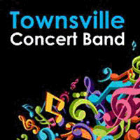

Upcoming Events
SUNDAY VARIETY CONCERT
Presented by Friends of the Theatre
- 2pm Sunday 26 April
- Pimlico Performing Arts Centre
- Fulham Road
Enquiries - please phone 4723 7879
Harbourside Duo presents
Dream Serenade

Music of Debussy, Ravel, Saint- Saens, Sibelius and others.
March into Sommarhagen!
Dance the Habanera with the Girl with Flaxen Hair!
Be seduced by Thais!
Or just relax and let the music wash over you.
- 2pm Sunday 17 May
- C2 Townsville Civic Theatre
Aviva String Quartet
Following the phenomenal success of their 2014 season, the superb foursome return with their first concert for 2015, bringing their signature style of classical and modern music to the masses in their own fresh and entertaining style.
Featuring
- Caroline Lloyd-Doolan on violin
- Susan Fraser on violin
- Jessica Winton on viola
- Ivy Wu on cello
Ticketshop
- 2pm Sunday 14 June
- C2 Civic Theatre Building
Other Events
$25 Adult - $20 Concession - Children 12 and under free!
|  | Townsville Concert Band |
2pm Sunday 28 June at C2 (Townsville Civic Theatre) |
 |
Voices of Pimlico |
2pm Sunday 6 September at C2 (Townsville Civic Theatre) |
Townsville Concert Band |
2pm Sunday 27 September June at C2 (Townsville Civic Theatre) | |
Allegro Choir |
2pm Sunday 22 November at C2 (Townsville Civic Theatre) |